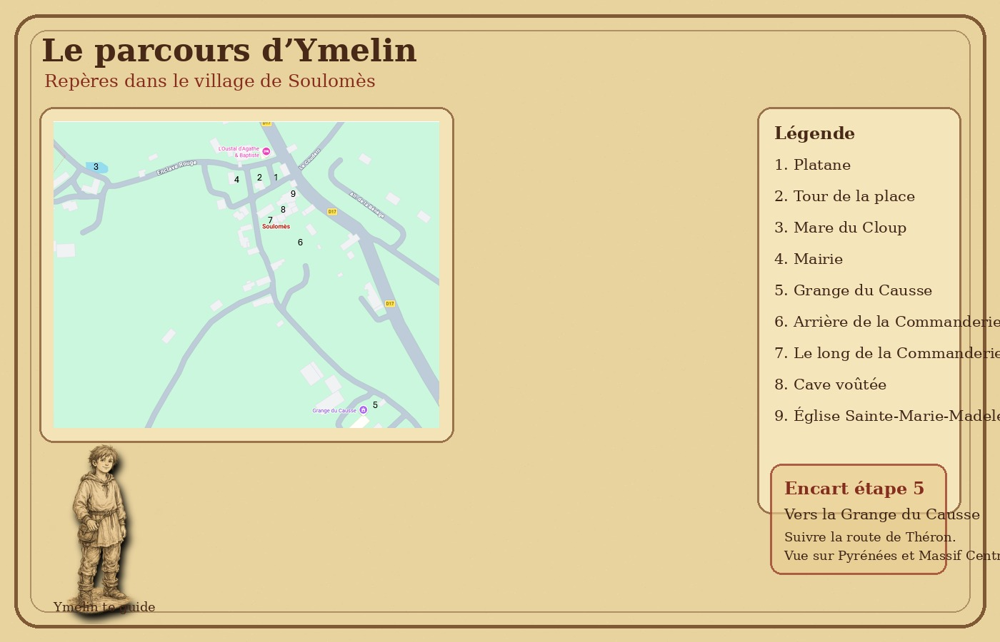

🗺️ Voir la carte du parcours

La carte reprend le plan réel du parcours. L’étape 5 est indiquée dans un encart car elle s’éloigne du cœur du village vers la Grange du Causse.
Étape 1 · Le platane
Le nom des habitants
Pour commencer notre voyage, Ymelin te lance un premier défi.
Sauras-tu retrouver le nom donné aux habitants de Soulomès ?
Clique sur les lettres dans le bon ordre pour former le mot.